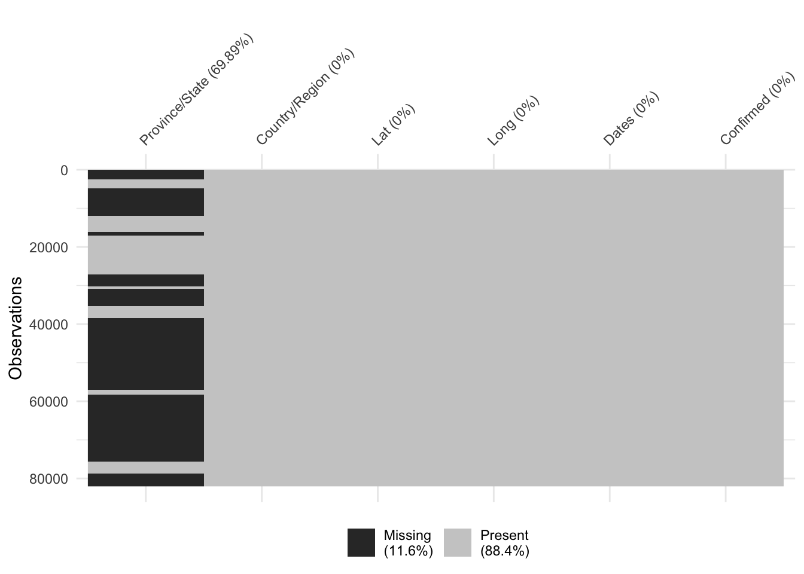

Chapter 4 Missing values
Exploring pattern of the missing value is an important step of any exploratory data analysis. Investigating missing values prior to beginning earnest work on the project provides us with deeper familiarity with available dimensions/data types/features. In our project, we we will consider empty or “NA” to be missing data. We will not consider 0 to be missing as it means that we have information about this data value and it is 0. 0 does not necessaily indicates missingness.
We also choose to visualize the missingness of our data using the joined dataframe from the tidy version of the three data sets. As each of our original data set contains 309 columns, it’s difficult to fit all columns names on one axis as they will be clustered and overlapped with each other. Instead, using joined tidy version of the three data sets yields only 9 variables for each data set which is obviously clearer and easier to fit in a graph.
The visualizations below show that we have no missing numerical variables in the three data sets. In other words, all longitude, latitude Dates and cases records (whether they are confirmed, recovered or deaths) are 100 % present for each country on each date.
However, we have missing data in categorical variables Province/State for certain countries/regions. The missing date in Province/State consists 11.6% of the data The missingness in Province/State is described in detail in the data source chapter as we explained the data collection process. To iterate, due to different characteristics of each country or region, only Australia, Canada, China, dependencies of the Netherlands, the UK, France and Denmark are reported at the province/state level. This pattern of missingness might be able to give more detailed distribution of Covid-19 cases of some countries over others which might in turn gives interesting geographical patterns.
